MOJI RADOVI:
Vježba 1. Izrada vlastitog fonta:
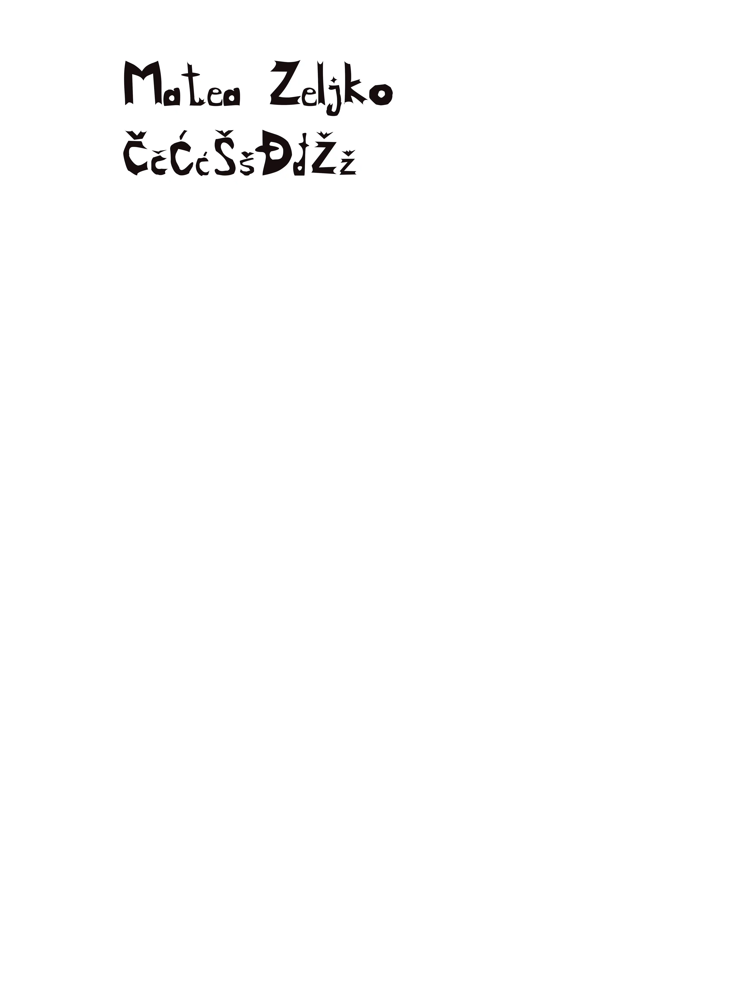
Vježba 2. Crtanje bezierovih krivulja i izrada maske na vlastitom fontu:
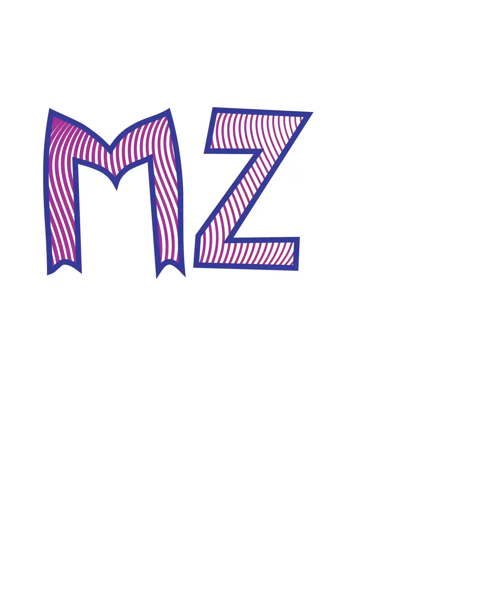
Vježba 3. Bojanje, transformiranje i izrada uzorka:
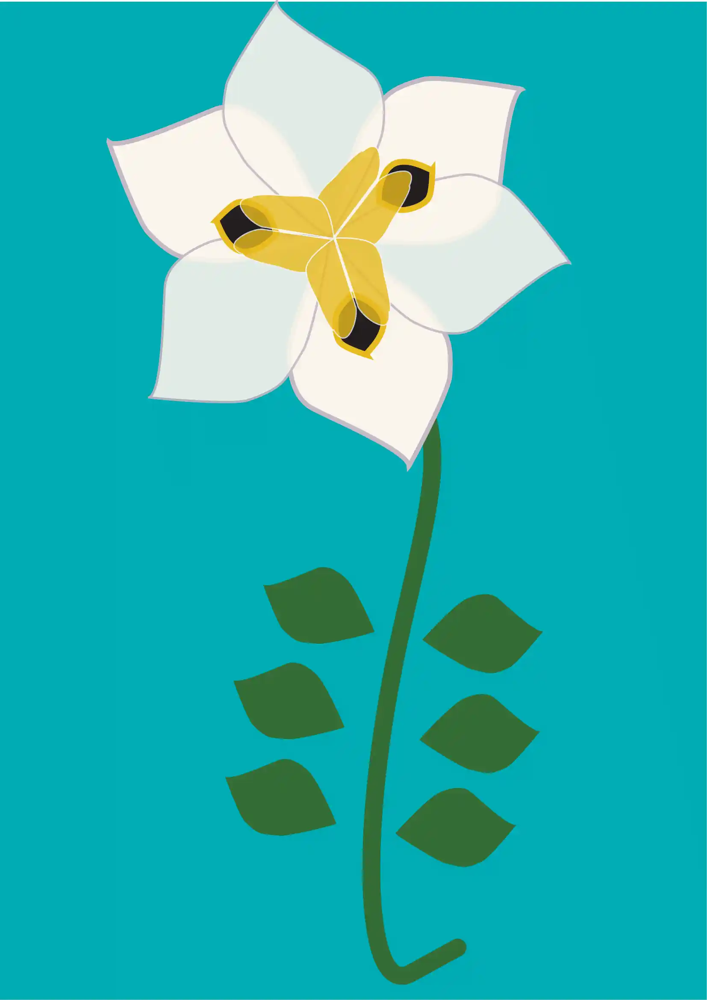
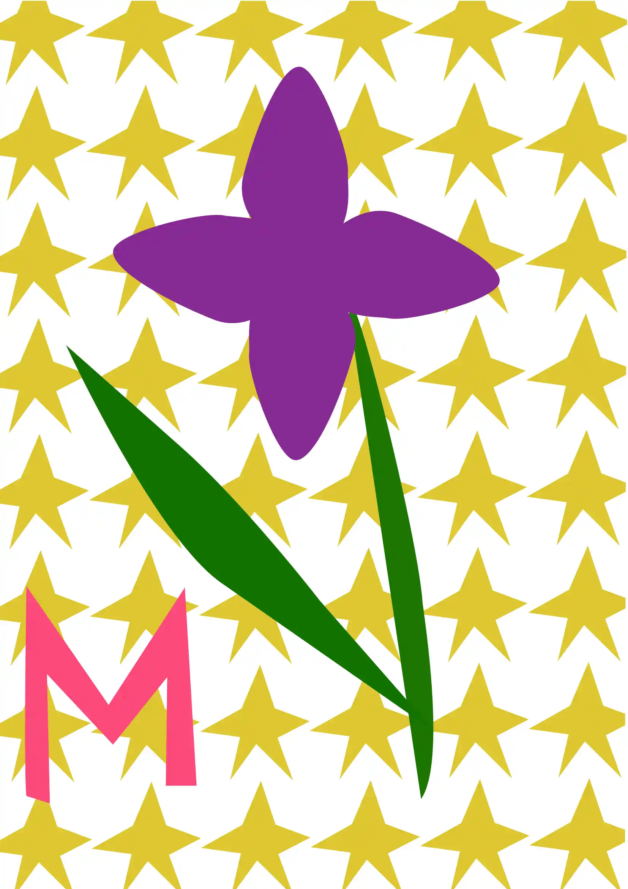
Vježba 4 Složeni objekti, gradijenti i transparencija:
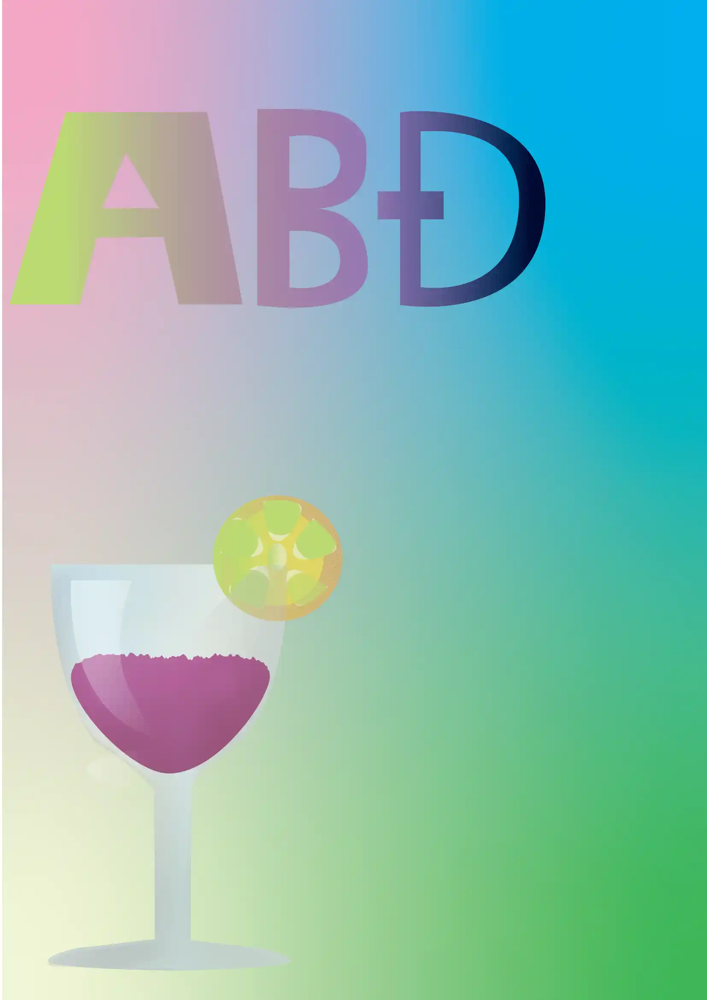
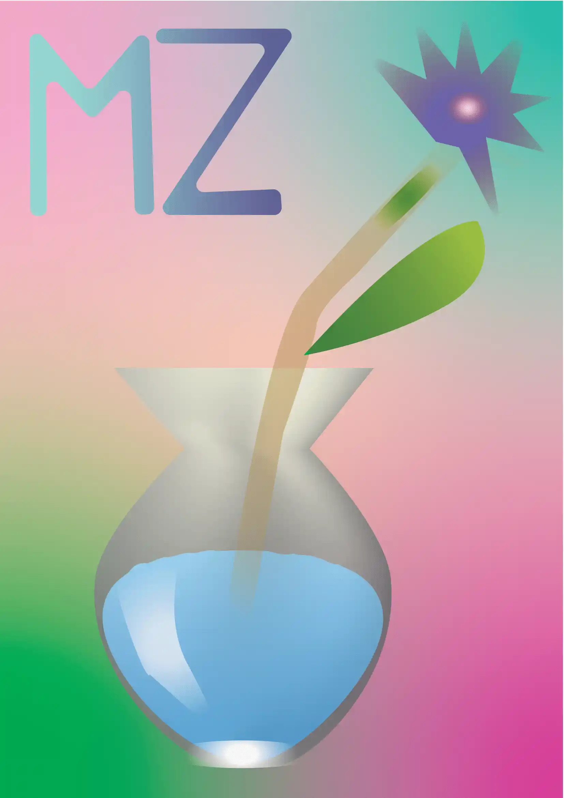
Vježba 5 Postupak retuširanja:
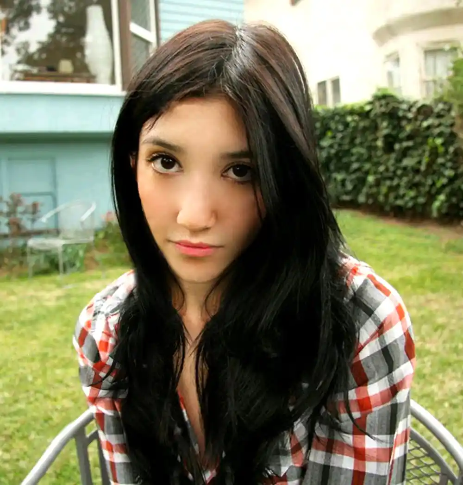
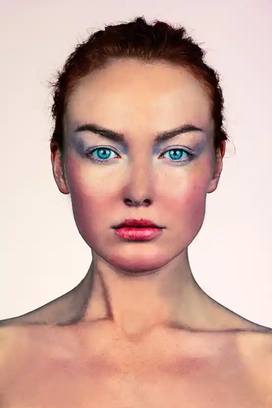
Vježba 6 Izvedba koloriranjas:
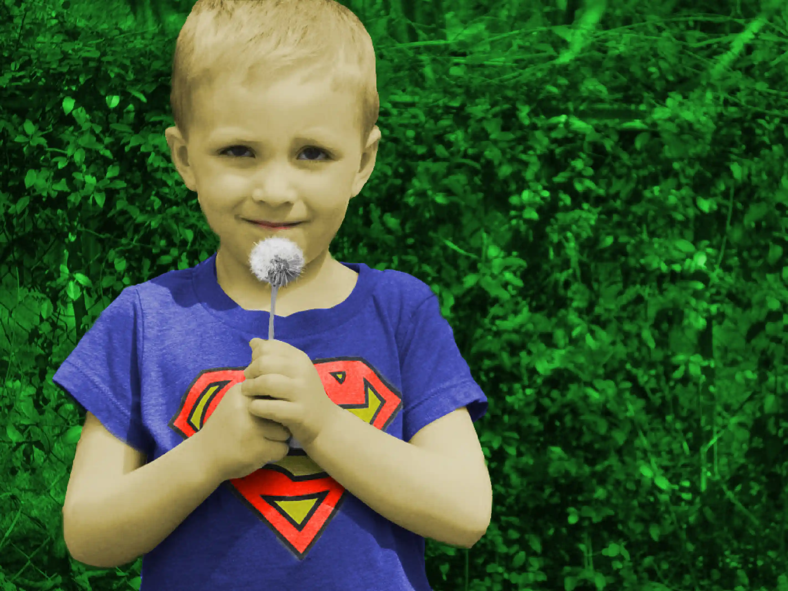
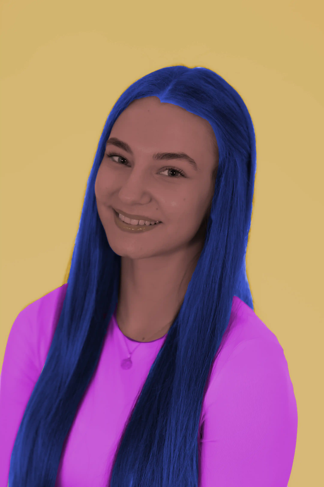
Vježba 7 Fotomontažni uradak:
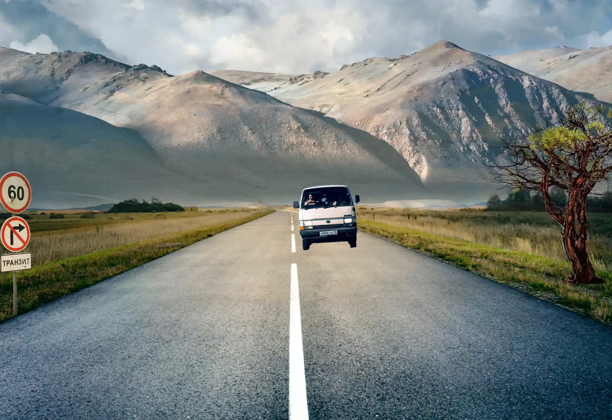
Vježba 8 Proces video obrade-kinemagrafa:s


Projektni zadatci:


Vježba 9 Video obrada:
Vježba 10. i 11. Izrada html stranice i objava na Github
Link na web stranicu